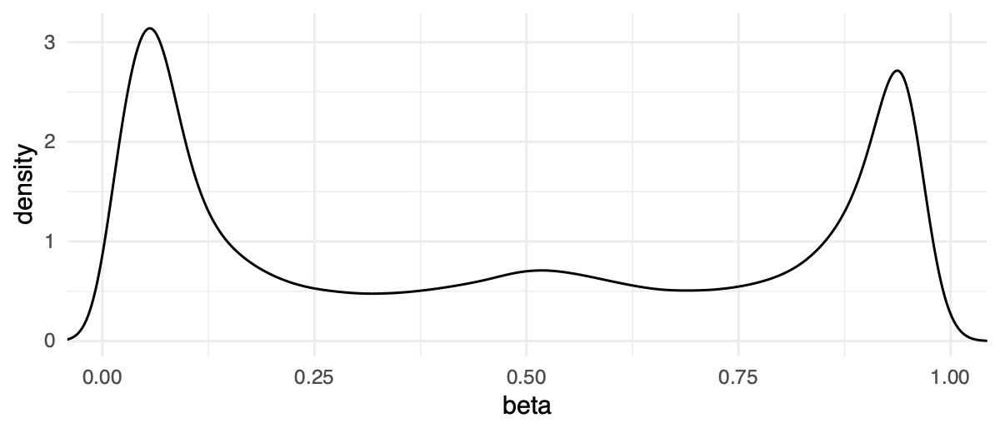
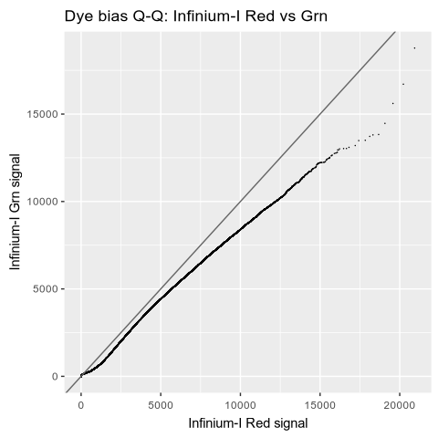
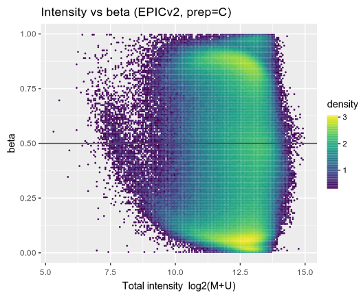
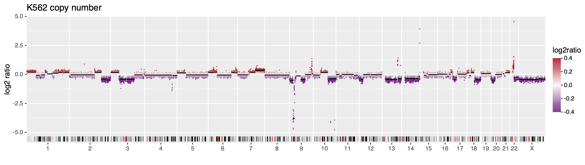
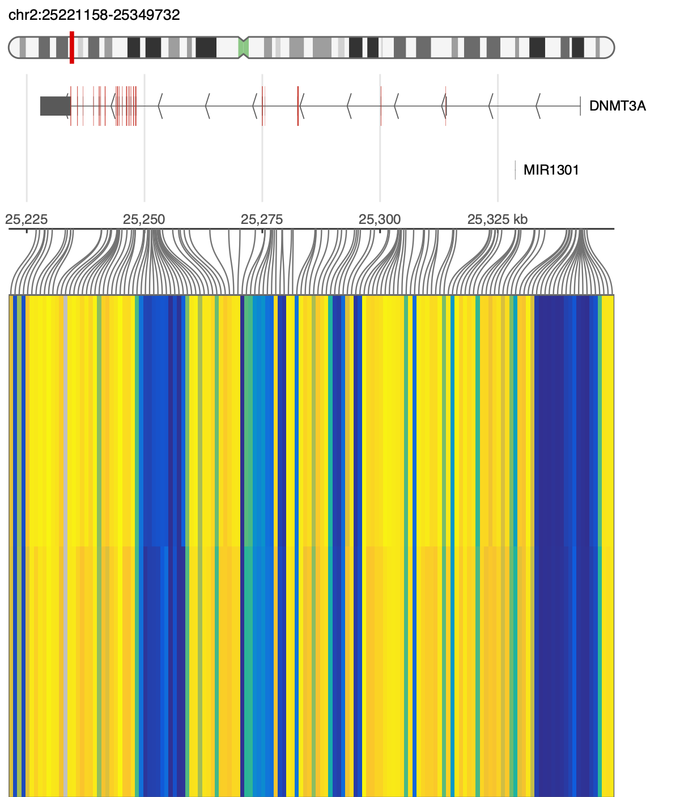
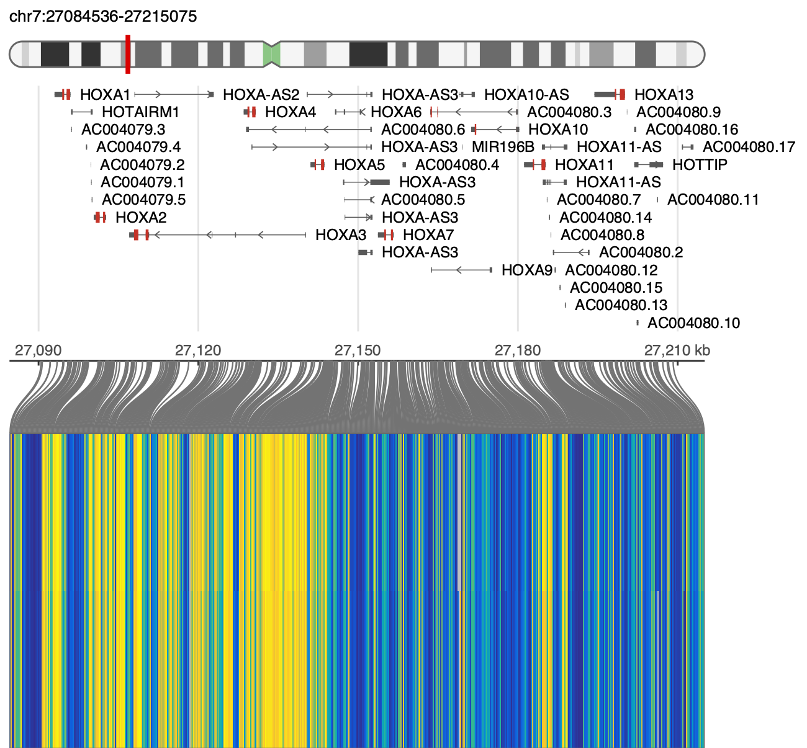
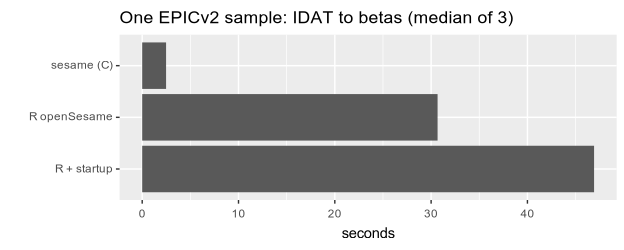

GitHub· R / Bioconductor· YAME· InfiniumAnnotation· cinderplot· EPIC · EPICv2 · HM450 · MSA
# build from source (conda install is up top)
git clone --recurse-submodules \
https://github.com/zwdzwd/sesame-cli
cd sesame-cli && make
# one-time: annotation into the shared store (yame downloads)
yame fetch InfiniumAnnotation/EPICv2
yame fetch genomes/hg38…builds a local, digest-verified store
($YAME_DATA_HOME, default ~/.local/share/yame) —
offline from here on:
EPICv2/ # probe annotation
├ EPICv2.ordering.tsv.gz
├ EPICv2.hg38.mask.cm
├ EPICv2.hg38.coord.tsv.gz
└ SHA256SUMS
genome/hg38/ # genome tracks
├ seqinfo.tsv.gz gaps.tsv.gz
├ cytoband.tsv.gz genes.bed.gz(+.tbi)
└ SHA256SUMSQCDPB (openSesame default) over a cohort in one process → YAME
.cg + qc.tsv.
# a folder of IDATs, searched recursively
sesame preprocess --out out/ in/
# or explicit prefixes (just betas)
sesame preprocess --output beta --out out/ \
idat_prefix_1 idat_prefix_2…writes one .cg per output over the cohort
(each with a .cg.idx of sample names) + qc.tsv:
out/
├ beta.cg (+.idx) # betas (fmt4)
├ intensity.cg (+.idx) # M/U (fmt3)
├ pval.cg (+.idx) # detection p
└ qc.tsv # QC metricsqc.tsv holds 65 per-sample metrics.
frac_dt — the fraction of probes above detection —
is the most critical for assessing data quality (also per type,
frac_dt_cg/_ch/_rs).
# head qc.tsv (key columns)
sample frac_dt frac_dt_cg frac_dt_rs
sampleA 0.978 0.979 1.00
sampleB 0.994 0.995 1.00More knobs: --prep QCEPB swaps in
linear dye bias (E = dyeBiasL); --collapse
averages EPICv2/MSA replicate probes to their cg-prefix (betasCollapseToPfx);
--detection pneg emits the negative-control-ECDF detection p;
and GCT (bisulfite conversion) joins qc.tsv on every platform.

# betas -> a 1-D density (bimodal)
yame unpack beta.cg | cinderplot --no-header \
'aes(V1) + geom_density()
+ theme_minimal() + labs(x="beta")'The two diagnostics from sesame's
supplemental QC,
with no R in the loop: preprocess writes the signals,
attach-probe labels them,
tabl reshapes them, and
cinderplot draws them.

sesame preprocess --prep C --output intensity --out qc/ $PFX
# --with col carries the ordering's channel through; then pool each
# channel's in-band {M,U} and read off a matched quantile grid
sesame attach-probe --with col qc/intensity.cg \
| tabl filter 'col=="R" || col=="G"' \
| tabl longer -c 3:4 -v sig \
| tabl quantile -g col -n 51 sig --wider > qq.tsv
cinderplot 'qq.tsv + aes(R, G) + geom_point(size=1.2)
+ geom_abline(slope=1, intercept=0, colour="grey40")
+ labs(x="Infinium-I Red signal", y="Infinium-I Grn signal")' qq.png --size 5x5--prep CD and the
curve should land on the line. Ports sesameQC_plotRedGrnQQ().
sesame preprocess --prep C --output intensity,beta --out qc/ $PFX
# both .cg are positional to the same ordering, so attach-probe puts
# them side by side -- no join. Then bin onto a 180x140 grid.
sesame attach-probe qc/intensity.cg qc/beta.cg \
| tabl rename M=2 U=3 beta=4 \
| tabl mutate 'logint=log2(M+U)' \
| tabl bin2d -x logint -y beta -nx 180 -ny 140 --xlim 5,15 --ylim 0,1 \
| tabl mutate 'density=log10(n+1)' > qc/ib.tsv
cinderplot 'ib.tsv + aes(x, y, colour=density) + geom_point(size=0.7)
+ geom_hline(yintercept=0.5, colour="grey30") + scale_colour_viridis()
+ labs(x="Total intensity log2(M+U)", y="beta")' ib.png --size 5.5x4.5sesameQC_plotIntensVsBetas().Per-probe OLS with t/F tests + BH, matching R's lm to ~1e-9.
sesame dml --betas out/beta.cg \
--index EPICv2.ordering.tsv.gz \
--meta samples.tsv \
--formula '~ group + age' > dml.tsvStrip the genetic fingerprint: zero (or reversibly scramble) the SNP
(rs) probe intensities in an IDAT — every other bead
is byte-identical, so betas are unchanged except the SNPs.
# zero SNP beads (a prefix does both channels)
sesame deidentify sample_prefix
# or reversibly scramble, then restore
sesame deidentify --randomize --seed 42 s.idat
sesame deidentify -r --seed 42 s_noid.idatOLS vs a normal panel → log2 → genome bins → CBS (DNAcopy port). Two output files.
sesame preprocess --prep "" --raw-signal \
--output total_intensity --out t/ tumor
sesame cnv --platform EPICv2 \
t/total_intensity.cg segments.tsv bins.tsv
# --probes: per-probe; --exclude chrY
cnv"># plot the two files with cinderplot
cinderplot 'out/bins.tsv
+ aes(chrom=chrom, x=start, xend=end, y=log2ratio, colour=log2ratio)
+ geom_point(size=.5)
+ geom_segment(data="out/segments.tsv", y=seg.mean, color="black")
+ scale_x_genome("hg38/seqinfo.tsv.gz")
+ scale_colour_gradient2(low="#762a83", high="#b2182b")
+ ideogram("hg38/cytoband.tsv.gz")'SNP (rs) probes → VCF (formatVCF); GT + fractions exact vs R.
sesame vcf tumor --platform EPICv2 \
--snp EPICv2.hg38.snp.tsv.gz > geno.vcf
# --variants: only rs + channel-switchA locus's betas as long-form TSV → cinderplot over the gene models in zhou-lab/genomes.

sesame region --gene DNMT3A --pad 2000 \
--betas cohort.beta.cg --platform EPICv2 \
| cinderplot 'region()
+ cytoband("hg38/cytoband.tsv.gz", height=.5)
+ genes("hg38/genes.bed.gz", height=1.5)
+ matrix(-, cluster=samples, rownames=off)'
sesame region chr7:27,090,000-27,210,000 \
--betas cohort.beta.cg --platform EPICv2 \
| cinderplot 'region()+genes()+matrix(-)'One EPICv2 sample, IDAT → betas, median of 3. R is timed twice: the
openSesame() call alone, and the whole invocation —
startup and library(sesame) included — which is what a
pipeline pays, since it starts a fresh R per sample.

tools/bench_vs_r.sh $PFX EPICv2 3Post-process a beta.cg → beta.cg,
positional to the platform ordering.
# lift betas across platforms (mLiftOver)
sesame mliftover --to EPIC --platform EPICv2 \
beta.cg beta.EPIC.cg
# fill NA betas (mean / genomic neighbours)
sesame impute --method mean beta.cg out.cg
sesame impute --method neighbors \
--platform EPICv2 beta.cg out.cgmliftover prefix-joins to the target ordering (EPICv2↔EPIC↔HM450); impute fills NAs by the probe's cross-sample mean, or the nearest same-strand genomic neighbours (imputeBetas*).
Both are local fills — a neighbouring CpG or the column
mean — and they only reach probes the array already carries. For imputation as
an inference problem, use
methscope:
methscope upscale predicts genome-wide CpG methylation
from a sparse methylome with a trained model, which is both more accurate and
not limited to the manifest.
Betas and signals are stored positionally as compact YAME .cg files —
one value per probe, in a fixed order, with no Probe IDs inside. The IDs live once in the platform's
ordering table. Keeping them out of every sample makes files small and byte-for-byte alignable —
stack N samples into a matrix by column with no key-matching. To read a .cg back as a
labelled TSV, join it with the ordering via attach-probe.
Probe_ID M U col
cg00000029_TC21 NA 41791408 2
cg00000769_BC11 26756338 59799309 G
ctl_1060944_NEG NA 10609447 2Four columns and nothing else — not the
Illumina/sesame manifest with tabs instead of commas. M
is the methylated bead address (Illumina AddressB_ID,
NA for Infinium-II), U the
unmethylated one (AddressA_ID), and
col the design: G /
R Infinium-I in green or red,
2 Infinium-II. Sequences and coordinates live in
separate files a custom array can do without. A legacy fifth
mask column is still read; published orderings keep
the mask in a companion .cm.
Tab- or comma-separated, plain or gzipped — the separator is sniffed from the header, so a table exported straight out of a CSV manifest needs no conversion. A header line is required.
Row order is load-bearing and permanent. A
.cg stores one value per row with no Probe_IDs inside,
so row i is probe i forever — sorting or inserting a row
re-labels every .cg written against the old file.
Freeze it when you publish, and version it if it changes.
--platform takes a name or a path, so a custom
or pre-release array needs no special flag. Every companion asset has its own
override, inferred only when the platform is a name you published.
# named platform: ordering, mask, coords all inferred
sesame preprocess --platform EPICv2 --out out/ idats/
# custom array: the ordering IS the platform
sesame preprocess --platform MyArray.ordering.csv \
--mask MyArray.mask.cm --prep QCDPB --out out/ idats/
# without --mask, prep C or "" work; Q/P/B need one
sesame preprocess --platform MyArray.ordering.csv \
--prep C --out out/ idats/Overrides: --mask
--coords --snp
--normals. From an Illumina manifest the ordering is a
projection: IlmnID→Probe_ID,
AddressB_ID→M,
AddressA_ID→U, design +
colour channel→col. Full spec in the
README.
$ sesame attach-probe out/beta.cg
Probe_ID 206909630040_R03C01
cg00000029_TC21 0.9124
cg00000769_BC11 0.0331
# the ordering is inferred from the row count -- each
# platform's is a distinct length. Name it if you'd rather:
$ sesame attach-probe --platform EPICv2 out/beta.cg
# --all for every sample column (matrix)$ sesame idat-dump --tsv sample_Grn.idat.gz
address mean sd nbeads
10600313 4821 118 12
10600322 287 34 9$ sesame version
sesame <version>
built against YAME <version>
store ~/.local/share/yamesesame-cli is a C reimplementation of the SeSAMe method family. Please cite the work behind the parts you use: